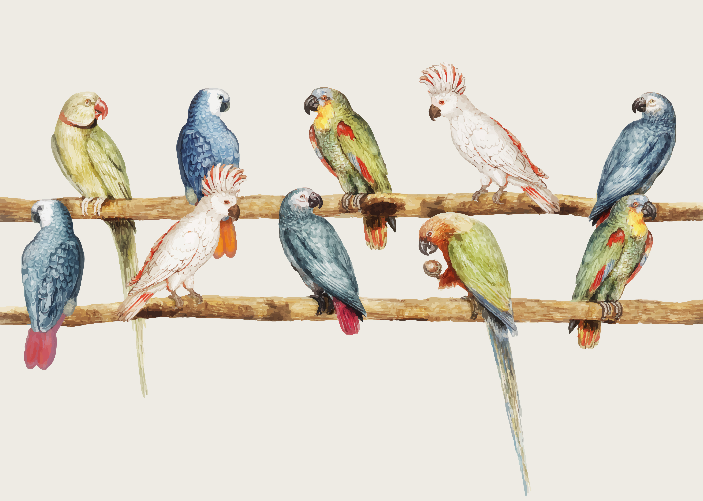

Periquitos
Imágenes de periquitos

Si quieres ver más información de pericos, da click aquí
Datos que quizás no sabías de los pericos
3 Cosas que los pericos aman
- Jugar con juguetes y explorar su entorno.
- Comer frutas frescas y semillas.
- Interactuar y socializar con otros pericos.
3 Cosas que los pericos odia
- Cambios bruscos en su entorno o rutina.
- Ruidos fuertes y repentinos.
- Ser ignorados o estar solos durante largos períodos de tiempo.
Los pericos más conocidos son:
- Perico Australiano (Melopsittacus undulatus).
- Perico Monk (Myiopsitta monachus).
- Perico del Senegal (Poicephalus senegalus).